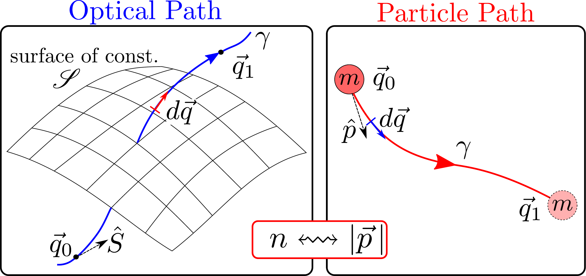

Hamiltonian
Topological Optics

Dr. M. Perry Nerem
About Me
|

What is Topology
What is Topology
into "inside" and "outside" regions.
They are topological similar.
What is Topology
Topology studies the properties of an object under continuous transformations.
A mug $=$ a donut (torus)
Topological Physics
- Look at material properties under deformations.
- Eg: A topological insulator exploits the electrical properties in atom configurations.
Topological Physics Example
A simple model of a topological insulator. Two sheets of electrons with anti-parallel magnetic fields.Formulations of Physics
- Newtonian physics identifies particles and calculates forces on them. \begin{equation} \vec{F}=m\vec{a} \end{equation}
-
Lagrangian physics studies time evolution of generalized coordinates.
\begin{equation} \frac{d}{dt}\left(\frac{\partial \mathcal{L}}{\partial \dot{q}_i}\right) -\frac{\partial \mathcal{L}}{\partial q_i}=0 \end{equation} - Hamiltonian physics deals with generalized coordinates and their momentum. \begin{equation} \dot{q}_i=\frac{\partial H}{\partial p_i} , \quad \dot{p}_i=-\frac{\partial H}{\partial q_i} \end{equation}
Why use Hamiltonians?
Path of ball down the ramp
matches trajectory of refracted light.
matches trajectory of refracted light.
Optomechanical Analogy
The Hamiltonian bridges motion of particles to waves!Fermat's Principle of Least Time: Light path minimizing time
Maupertuis' Principle of Least Action: Classical path minimizing action

\begin{equation}
\int_\gamma n\hat{s}\cdot d\vec{q}
\leftrightsquigarrow
\int_\gamma|\vec{p}|\hat{p}\cdot d\vec{q}
\end{equation}